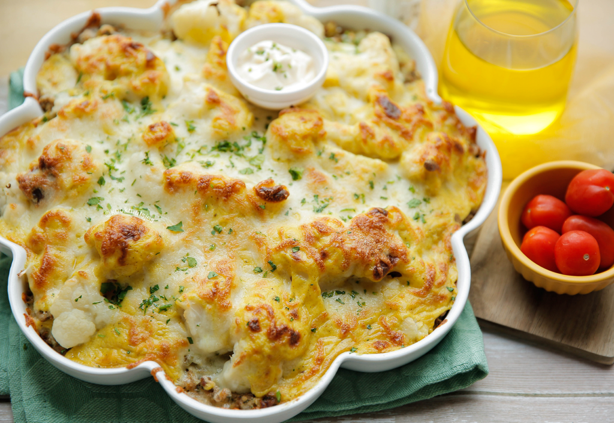
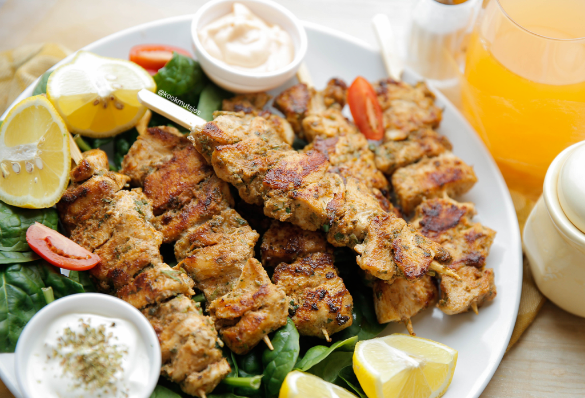
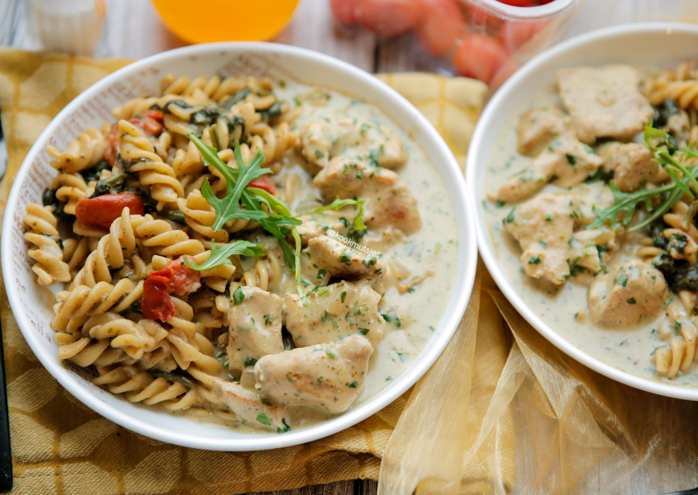
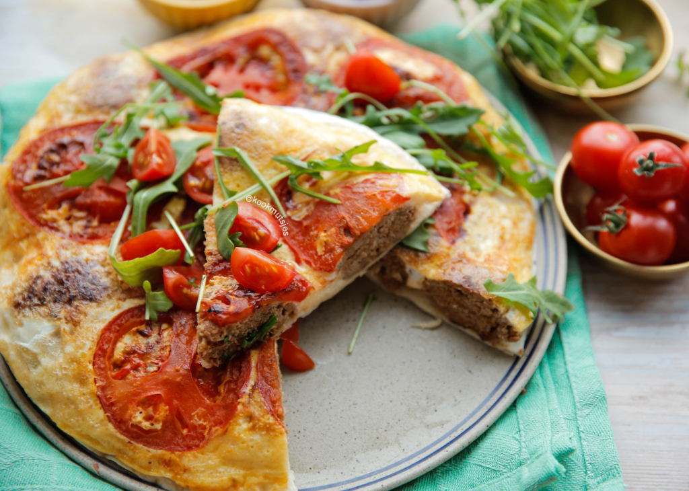

SPECULAAS-KRUIMEL CHEESECAKES
By Najat
Als je dit weekend van plan bent om te gaan bakken, bak dan deze snoezige speculaas-kruimel cheesecakes! Ze zijn zo lekker! Met een stevige koekjesbodem, zachte cheesecake en een vulling van kersenvlaai worden ze ook nog eens afgemaakt met krokante koekkruimels! Too good!
BLOEMKOOL-KERRIESCHOTEL MET GEHAKT
By Najat
Hier een ovenschotel waar het hele gezin dol op zal zijn! Zo makkelijk én zo lekker! Deze bloemkool-kerrieschotel met gehakt zit vol smaak en is een grote favoriet van de kids, big time! Serveer met je favoriete salade en je hebt een doordeweekse maaltijd!
KIP SOUVLAKI
By Najat
Dit is een van de makkelijkste maaltijden die je zelf kunt maken! Daarnaast zal bijna iedereen hier dol op zijn, want dit recept voor Griekse souvlaki is koolhydraatarm, glutenvrij, dieetvriendelijk en gezond! Een must voor elke liefhebber!
FUSILLI MET KIP IN SAUS
By Najat
Dit moet je proberen! Deze pasta met kip in een romige saus is heerlijk! Er gaat niets boven een zelfgemaakte saus en het is zo eenvoudig te maken. Als jij nog niet weet welk gerecht op tafel komt vandaag, dan heb ik nu dit recept voor je!
EI-WRAP MET GEHAKT
By Najat
Als je vandaag een makkelijk en lekker recept wilt maken, I’ve got you covered! Deze ei-wrap met gehakt always hits the spot en kan in slechts 20 minuten van jou zijn!